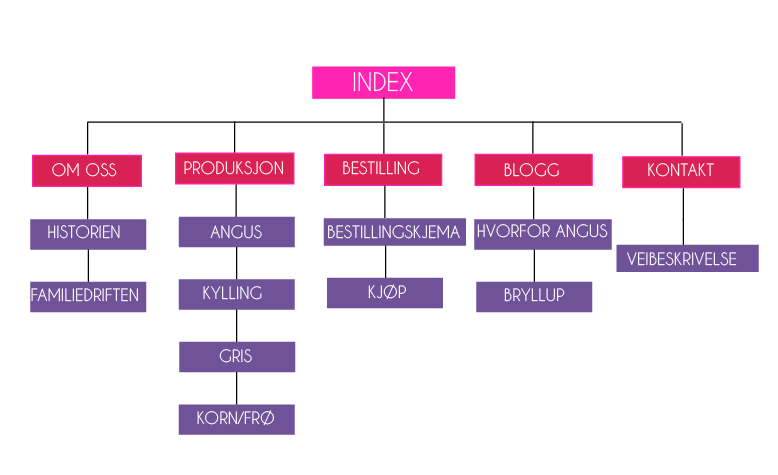

Definisjon
Definisjonen av Informasjonsarkitektur er kunsten av å organisere og merke informasjon for å forbedre surfing og søking, dvs organisere alle typer innhold som f.eks filer, databaseinnhold, multimedia osv.
Informasjonsarkitektur er:
- Organisere informasjonen til taksonomier og hierarkier som henger sammen
- Vise resten av utviklerteamet hvordan siden skal organiseres
- Bygge opp navigasjonsstrukturen
- Definere standarder for koding
- Ha ansvar for search engien optimization-strategier
Det er utrolig vikitg å ha en god struktur på websiden din slik at brukerne kan lettere finne det de leter etter. Informasjonsarkitektur står for veldig mye av brukervennligheten til en nettside og det er derfor veldig viktig strukturere informasjonen etter brukerenes forventinger og behov for best mulig opplevelse.
Sortering
Man kan sortere innholdet på mange forskjellige måter som for eksempel:
- Alfabetisk
- Kronologisk
- Tematisk
- Geografisk
- Blanding av noen over
Det er lurt å involvere brukerne i prossessen slik at innholdet blir gruppert slik de forventer og ønsker det. En god måte å skulle involvere brukern på er ved bruk av kortsorterings metoden. Man skriver ned innhold og brukermål på kort som brukeren sorterer slik at det virker fornuftig og gir mening for dem. Kan også være lurt å navngi hver bunke(kategori) eller be dem plukke ut innhold de ville brukt messt slikt man kan finne ut hva som vil være på forsiden.
For å få en IA som er oversiktelig, og som gjør systemet enkelt å bruke er kortsortering en veldig god og troverdig metode å bruke, den er også veldig rimelig. kortsorteringsmetoden brukes ikke ene og alene til å bestemme strukturen til nettstedet, men er en del av den brukersentrerte prosessen, og er et tillegg til personas etc.
De forskjellige sorteringene analyseres i ettertid ved hjelp av statistiske verktøy.
Innholdsprototype
Forslag på informasjonsstruktur settes opp i en innholdsprototype. Dette er en prototype uten design og layout, men har kategoriene og eksempel på innhold lagt inn. Slik kan både din bedrift, og faktiske brukere enkelt teste flyten i løsningen og se hvor enkel informasjonen er å finne .Etter testingen er gjennomført gjør man endringer, og prøver eventuelle nye løsninger før man ender opp med en god struktur, som danner et godt utgangspunkt for en god navigasjonsmodell.